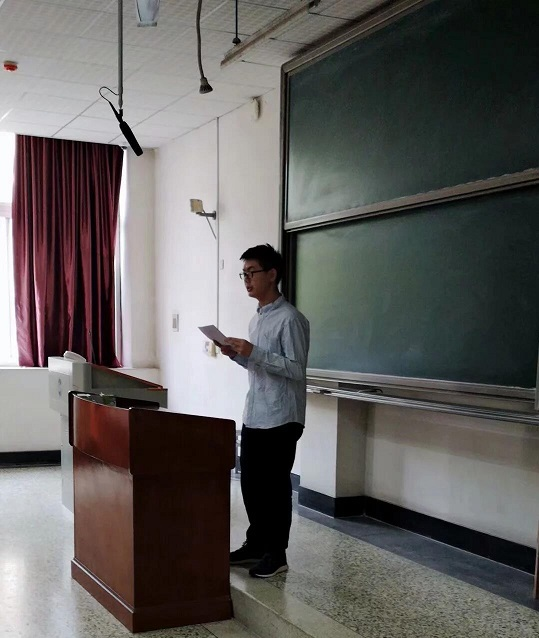
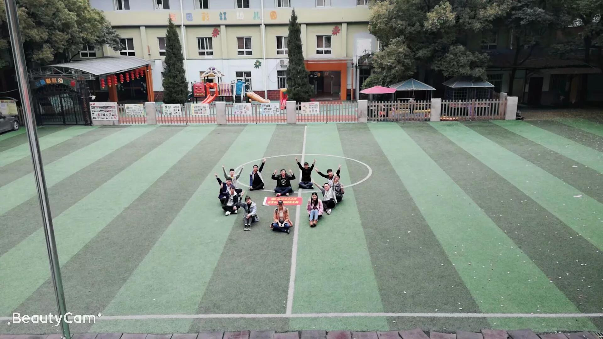
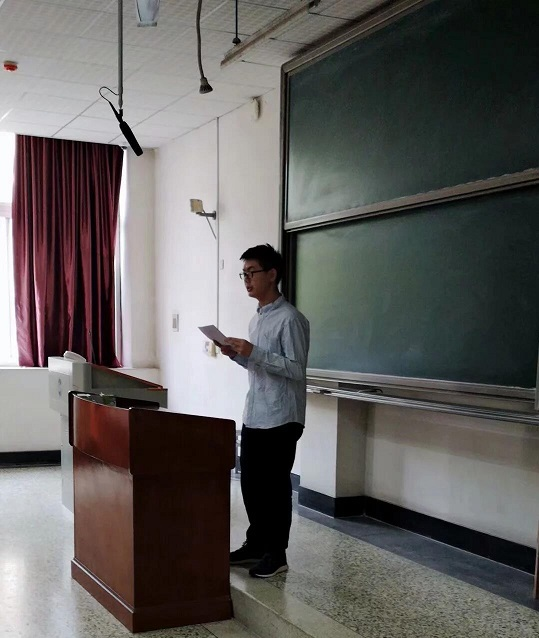
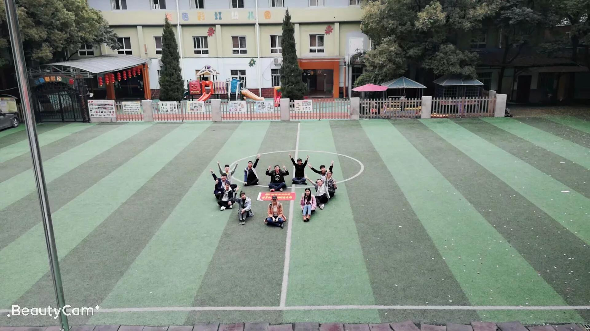

在班长和学习委员的带领下，计算机类y1802班稳抓学风建设，督促和帮助同学们更好的学习。
组织同学们进行晚自习统一学习，试卷讲解，考试分析来帮助同学们掌握所学知识。
此外，学习委员还在考试前精心准备学习资料，最终，y1802班在学期末考核中名列年级前茅。
在抓好学习的同时，计算机类y1802班班委还积极组织文化活动来丰富同学们的精神世界。
如"遇见更好的自己"心理主题班会，读书分享会等。
让同学们在活动中畅所欲言，在交流中获得心灵上的提升。
为了庆祝中华人民共和国成立70周年，纪念五四运动100周年
计算机类y1802和y1807团支部联合组织开展了“青春心向党，建功新时代”特别主题团日活动
在活动上，两名优秀的共青团员代表围绕在新时代继承和弘扬五四精神，进行了一场团旗下的演讲
之后，我们又一起重温了入团誓词，唱响了“光荣啊 !中国共青团”
每一名团员都在这庄严肃穆的仪式中接受了“沉浸式”的精神洗礼，誓要将五四精神发扬光大
“观革命先烈，瞻红色风姿”，计科y1802团支部一起去追寻改革开放的足迹
时光流逝，尽管已经一个世纪过去，回眸辛亥革命，我们会发现
那一段浴血奋战的历史留给我们的，绝不仅仅是推翻了一个如迟暮老人般的清王朝那般单薄
我们需铭记历史，继承党的光荣传统，承担起我们的历史责任
把红色教育落实到每一次的社会实践中
伴随着“3.5学雷锋志愿服务文化月”的到来，计算机类y1802的志愿者们走进了武汉市春苗学校
这一次，我们走进了六年二班的课堂
看到他们一张张稚嫩的脸庞，仿佛看到了他们对未来的憧憬与向往。
在讲台上，我们开展了你来比划我来猜、知识竞答等一系列游戏
最后，我们以一首《最初的梦想》结束了此次志愿活动。温暖有你快乐出发，志愿服务永不停歇
 


